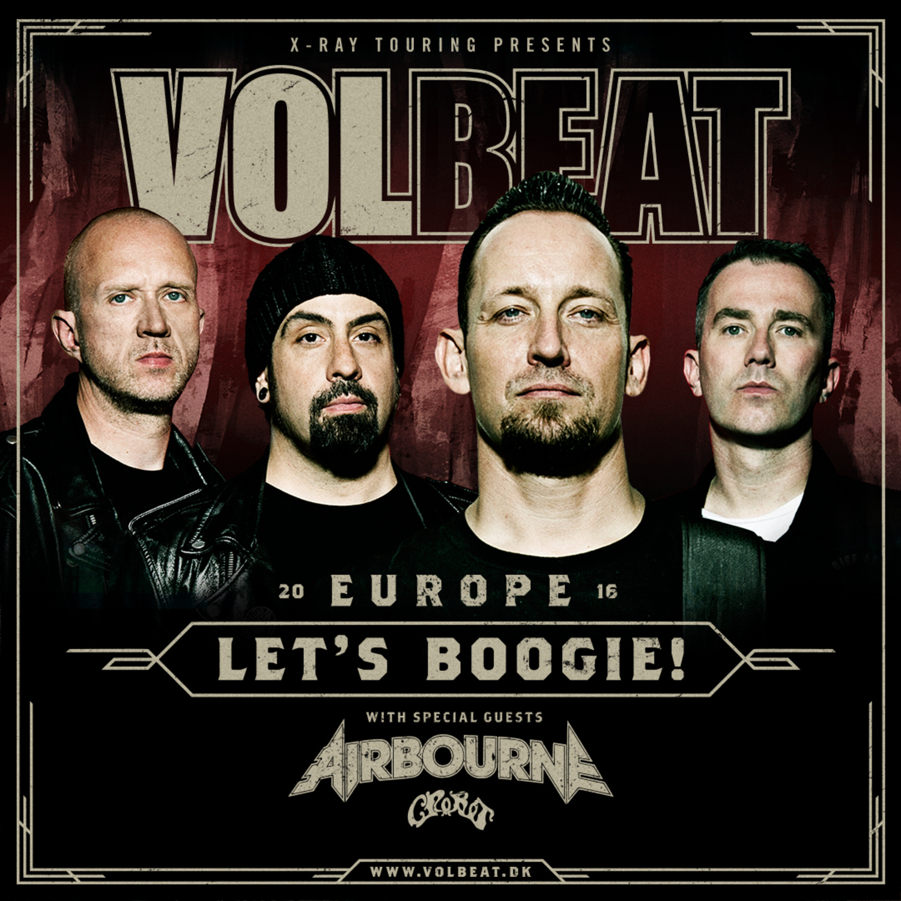
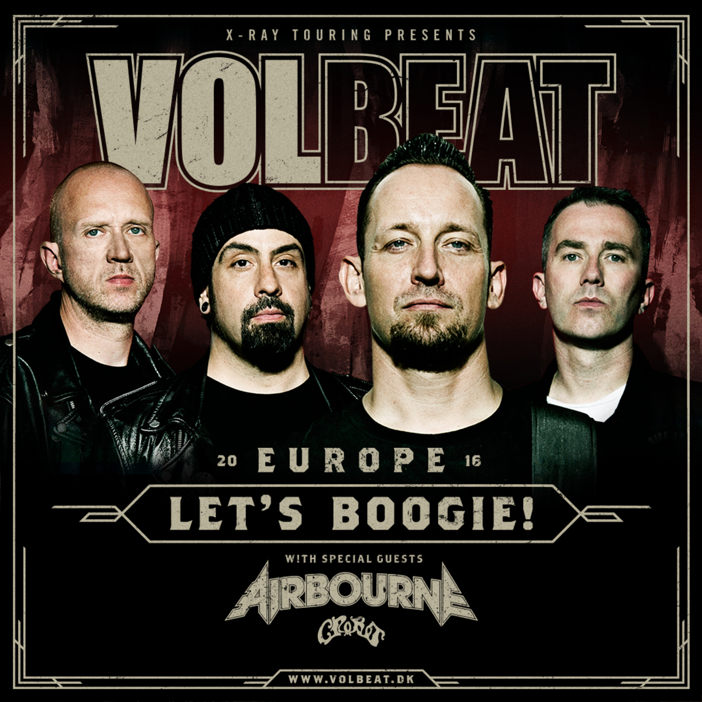

Volbeat é uma banda dinamarquesa de heavy metal formada em 2001, em Copenhagen.
O seu estilo musical é, principalmente, o heavy metal/hard rock com influências do rockabilly.
Michael Paulsen (vocalista e guitarrista) sempre cita e convida membros de bandas que o influenciaram,
como o Mercyful Fate (na música "7 Shots", do disco "Beyond Hell/Above Heaven", um dos guitarristas do Mercyful Fate,
Michael Denner, e o vocalista da banda Kreator, Mille Petrozza, tocam na faixa) e até por cantores de rock and roll/rockabilly,
por exemplo Elvis Presley e Johnny Cash.
Discos
 | |  | |
| Michael Poulsen (Vocalista) | Jon Larsen (Baterista) | Rob Caggiano (Guitarrista Solo) | Kaspar Boye Larsen (Baixista e Vocal de Apoio) |
 
